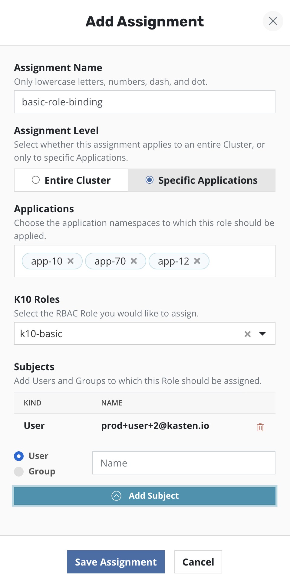
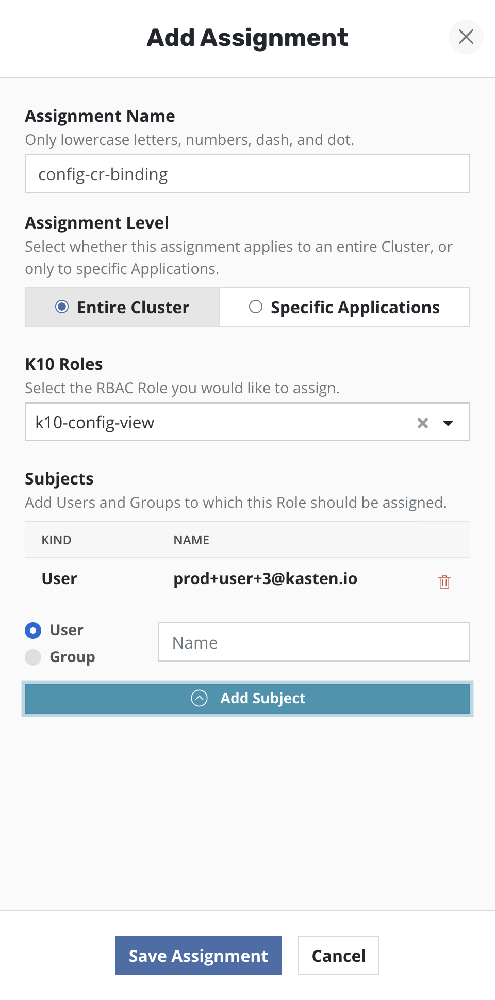

Restores and
Day-to-Day Administration
The four modules before this one built the platform; this one is the work you do every week once it is standing. You build a policy and schedule it, you get data back, and you keep an eye on the estate. The center of gravity is the restore: three sources a restore point can come from, three levels of granularity, and one decision — which path fits the situation in front of you.
- Build a policy that snapshots on a schedule, exports to a location profile, and retires restore points on a grandfather-father-son (GFS) schedule
- Choose between a local snapshot, an exported restore point, and an imported restore point, and defend the choice
- Run a restore in place, into a different namespace, and at volume or file granularity, and predict what happens to existing resources
- Explain how an export policy on one cluster and an import policy on another combine into an application-mobility path
- Assign who can protect and restore what using the built-in roles, and work a daily and weekly routine off the dashboard
Building a policy: schedule, snapshot, export, retention
This is where your Veeam Data Platform muscle memory earns its keep. By the end you can build a policy from a blank form — what it protects, how often it runs, whether it exports, how long each tier survives.
A Veeam Kasten policy rests on three concepts: snapshots and exports (the data-capture mechanisms), scheduling (capture frequency plus snapshot and backup retention objectives), and selection (which applications it protects, with resource filtering when finer control is needed). If you read "job settings, schedule, and job scope", your mental model is close enough to start.
What a policy protects is an application: a collection of namespaced Kubernetes resources, the relevant non-namespaced resources it uses, the workloads, Helm v3 deployment and release information, and all the persistent storage associated with those workloads.
Snapshot, export, or both
All policies center on actions: a snapshot action, plus an optional export action that produces a durable backup. Those are not two names for one thing — the difference decides where a restore can come from.
Snapshot
Export (the backup)
A snapshot-only policy is a policy with no durable copy. Because of the limitations of snapshots, durable backups are created by exporting data. Treat "snapshot plus export" as the default shape of a production policy.
Scheduling has four moving parts
Scheduling breaks into four components: how frequently the snapshot action runs, how often snapshots are exported into backups, the retention schedule of each, and when the snapshot action runs. Work through them in that order and the form stops feeling crowded.
Four decisions, in the order the form wants them
Click a step to open it. One opens at a time.
-
Actions can execute at an hourly, daily, weekly, monthly, or yearly granularity, or on demand; by default hourly actions run at the top of the hour and others at midnight UTC. You can also select execution times, and sub-frequencies that run multiple actions per frequency.
Sub-hourly actions suit Kubernetes objects and small data sets; take care with general-purpose workloads because of the risk of stressing storage or hitting storage API rate limits. Sub-frequencies also interact with retention: retaining 24 hourly snapshots at 15-minute intervals would only retain six hours of snapshots — the line that catches out more people than any other on this page.
-
By default every snapshot is exported into a backup, and you can instead select a subset — for example, converting only every daily snapshot. That subset choice is the lever when hourly snapshots are cheap on the array and expensive in the object store.
-
Veeam Kasten can use a grandfather-father-son (GFS) retention scheme: you set the number of hourly, daily, weekly, monthly, and yearly copies to retain, and it handles both cleanup at every tier and graduation to the next one; on-demand policies cannot have a retention schedule. Backup retention defaults to the snapshot values and can be set independently — few snapshots for fast recovery, more backups for long-term needs.
One surprise to know in advance: restore points from failed runs do not count towards retiring older ones — they are retained until enough successful runs satisfy the counts.
-
Advanced Options picks when actions execute within the frequency interval — for daily, which hour or hours and which minute. By default retention counts anchor to the top of the hour, midnight, midnight Sunday, midnight on the first of the month, and midnight on 1 January, all in UTC. Times can be shown in local time or UTC, but all are converted to UTC, and schedules do not change for daylight savings time.
The Backup Window runs the policy once at the window start time — and for an hourly policy in a window longer than one hour, every 60 minutes thereafter within the window — and if the interval is too short the run will not finish and is canceled. With staggering enabled, Veeam Kasten finds an optimal start time within the interval, spreading runs of multiple policies to reduce peak load.
Walking the form once, before you walk it for real
The concepts are in place; what you lack is the muscle memory of one pass through the form. Click through the six stages in order — each names what you should be looking at when you arrive.
* wildcard selects all. What you should see: your chosen applications in the selection field — already populated if you started from the Applications page. Where finer control is needed, resource filtering selects what is captured per application.What carries over from a backup job, and what does not
| Your instinct | Where it lands in Veeam Kasten | The catch |
|---|---|---|
| Job scope: pick the objects | Application selection — by name, name wildcard, or labels | A wildcard is a standing instruction, not a list: * selects all applications, and every namespace created after you save is in scope. |
| Retention points and GFS tiers | Retention counts per tier, with graduation handled for you | Snapshot and backup retention can be independent — short on the array, long in the object store. |
| Backup window | Backup Window, plus staggering to spread load across policies | A window that is too short cancels the run rather than letting it overrun. |
| Run the job now | Run Once, on the Policies page or the Policy View page | Unless an expiration time is specified, artifacts from that action are not eligible for automatic retirement and need manual removal. |
| Disable the job for a maintenance weekend | Pause and Resume, on the Policies page or the Policy View page | Paused policies generate no skipped jobs and are ignored for compliance, and applications protected only by paused policies are marked unmanaged. |
| Edit the job; it takes effect next run | Edit from either page; changes take effect during the next scheduled run | Changing a retention schedule automatically retires and deletes restore points that no longer fall under the new scheme. |
| Delete the job when the workload retires | Delete from the Policies page, the Policy View page, or the API | For safety, deleting a policy does not remove its restore points; delete those manually from the application restore point view or the API. |
Retention edits are not retroactive in the way you might fear: restore points graduate according to the retention schedule in effect when they were created, which protects previous restore points when the schedule changes.
The policy is an object on the cluster
Everything the form produces is a Kubernetes custom resource: a Policy encodes business rules and translates them into the data management actions Veeam Kasten applies, and it can be edited by modifying the YAML through the dashboard or the command line. The excerpt below is the top of a documented daily policy retaining seven daily and four weekly snapshots.
apiVersion: config.kio.kasten.io/v1alpha1
kind: Policy
metadata:
name: multi-cloud-export-policy
namespace: kasten-io
spec:
comment: Multi-region backup policy with exports to S3 primary and secondary regions
frequency: '@daily'
retention:
daily: 7
weekly: 4Reading a policy this way pays off the first time someone asks why a run did not happen: schedule and retention counts in one object, no form to navigate. It also explains the compatibility warning above — the interface guards you when you edit through it, and does not when you edit the resource directly.
Reading the status your policy produces
The dashboard reads your policy back to you in four labels. Scrolling down the page gives visibility into individual action activity, and clicking an in-progress or completed job gives the detail.
| Status | What it means |
|---|---|
| Unmanaged | No protection policies cover the object. |
| Non-Compliant | A policy applies but its actions are failing or have not been invoked yet — including a policy that exists but has not yet successfully run within its frequency. |
| Compliant | Policies apply and their service-level agreements (SLAs) are being respected; the status changes to Compliant on successful completion of a scheduled or manual run. |
| Removed | Objects that no longer exist on the cluster — hidden by default on the Applications page, so filter to Removed to find and restore them. |
A policy that has gone invalid will not run, which can produce a compliance breach; the Revalidate menu option on the Policies page exists for exactly that case. Worth knowing before you go looking for a deeper problem.
Getting data back: which path, and how far in
Built as a decision rather than a tour, because this is the section you will come back to under pressure. By the end you can pick between the three restore point sources, choose the right granularity, and say in advance what a restore will do to a resource that already exists in the target.
Once applications are protected, they can be restored in place or cloned into a different namespace. Start from the Applications page with the Restore dropdown option, or from the Restore Points page to find a specific restore point and initiate from it.
Set duration expectations before you promise anything: a restore can take a few minutes depending on the data captured, dominated by rehydrating data and recreating the application containers, so it tracks the speed of the underlying storage. Retries are built in — up to three attempts, with all successfully restored volumes retained between attempts and only partially restored volumes recreated.
Snapshot or exported backup — the interface tells you which you have
When you pick a restore point you are picking a restore pointrestore pointCreated as a result of a backup or import action, it represents a version-in-time of an application that Veeam Kasten has captured and that can be restored using a restore action., a grouped collection of the application's data artifacts; the view distinguishes manual from policy-generated restore points. A layered box means both a snapshot and a backup exist for the same data, and clicking it lets you select between them. Selecting a restore point opens a side panel with detail, to preview before initiating.
The Export term in the interface does not mean you need an import policy to use the result: no import policy is needed to restore from a backup — import policies are only for restoring into a different cluster. Restoring on the same cluster from an exported backup is the ordinary workflow.
Choose the right restore path
Five situations — pick the path you would take and read the reasoning that comes back. Two questions decide most real cases: is the local snapshot still trustworthy, and does the data need to land back on top of the running application?
The local snapshot is the fast path while the storage under it is intact — snapshots support fast restore times with low performance impact on the primary workload. The exported backup would also work, at the cost of a rehydration you did not need.
This is the scenario the export tier exists for: catastrophic storage system failure destroys your snapshots along with your primary data. The exported backup sits in an infrastructure-independent format in a separate target location, which is why it survives.
By default a restore targets the original namespace, but the target can be changed and new namespaces created at that point; debugging, test and development, and cloning are documented uses of exactly that. Restoring in place would recreate the entire application stack in the namespace — an outage you did not need to take.
The FileRecoverySession custom resource requests network access to files from exported restore points without a full restore of volume data. A Volume-Clones restore is the next-best answer — individual volumes into the existing namespace without disrupting its operation — though you then mount and copy by hand. A full application restore is the sledgehammer.
Import policies exist for importing applications into a cluster different from where they were captured — the path Section 03 walks. One dependency was decided months earlier: migration across clouds or between on-premises and public cloud requires the Export Snapshot Data option on the source policy, or the data is not exported and the import will fail.
Every path above is reachable from the same restore workflow — what changes is the restore point you select and the options you set on the way through.
What a restore does to what is already there
This is where "restore an application" stops behaving like "restore a virtual machine". Clicking Restore recreates the entire application stack into the selected namespace, including the original data and the versioned container images. A resource missing from the namespace is always restored; treatment of resources that already exist depends on the resource type and the overwriteExisting flag — read the table before your first production restore, not after it.
| What is in the target namespace | Without overwriteExisting | With overwriteExisting |
|---|---|---|
| Nothing — the resource is missing | Restored | Restored |
| Workloads (Deployments, StatefulSets, and the like) | Always restored | Always restored |
| ServiceAccounts and non-namespaced resources, such as a storage class | Restored only when missing from the namespace or cluster | Restored only when missing from the namespace or cluster |
| Other existing resources | Not restored; they maintain their current state | Restored to the restore point version. Immutable Secrets and ConfigMaps are also restored, by re-creating the resources |
For tighter control than the flag gives you, restore filtering selectively controls which namespaced objects are restored. And if the application is gone rather than damaged, filter the Applications page to Removed — removed applications are hidden by default — then restore through the normal workflow.
Three levels of granularity
By default a restore brings back everything captured. Where only a subset is required, the workflow supports artifact filtering, a data-only restore for a running application, and a volume-clones restore for volumes only.
Selectively bring back restore point artifacts, including volume snapshots — useful for a single persistent volume claim restore or rolling back configuration updates; by default all artifacts are selected. One trap: to preserve owner references, both the resource and its owners must be included by the filters.
A data-only restore selects all volume snapshots and no Kubernetes specifications, with guardrails: the captured workloads must exist in the target namespace, with the same replica counts and the same volumes — same number, same names. The checks exist because it is frequently used to bring older data into a newer version of application code.
Underneath, it follows a delete-and-restore-from-backup approach for the persistent volume claims, to maintain data integrity. This is not an in-place merge.
Volume-clones restore brings individual volumes into the existing application namespace without disrupting its operation or workloads — suited to recovering specific files when restoring the volume to another namespace is not permitted or desirable.
Plan for three consequences: restored claims append the restore point's creation timestamp to the original claim name, nothing is mounted to pods automatically, and each clone carries the label k10.kasten.io/cloned: "true", usable as a policy exclusion. Remove the clones once done — it keeps them out of future backups and prevents unnecessary duplication.
Supplementary · optional Going one level finer: recovering individual files
The FileRecoverySession custom resource requests network access to files from exported restore points without a full restore of volume data, and the k10tools frs sub-command provides a command-line interface, including a built-in file transfer client. File data is served through the OpenSSH implementation of the Secure File Transport Protocol, via a dedicated per-instance service that only permits access by the principal whose public key was provided.
Two constraints gate availability: only exported restore points should be specified — a local snapshot is not enough — and the files must sit in a volume exported in filesystem mode, or in block mode where the volume is unpartitioned with an ext4, xfs or ntfs filesystem, or has a GPT or MBR partition table with filesystem partitions containing those filesystems, with the guest filesystem not encrypted.
Exported restore points can be distinguished from local restore points with a label query:
kubectl get restorepoints -n app2 -l k10.kasten.io/exportProfileSessions are not permanent: at the time in its expiry field a Ready session changes to Failed, and deleting the custom resource terminates it and releases the accumulated resources. The default session expiry is 30 minutes, set by the frs.sessionExpiryTimeInMinutes Helm parameter.
Restoring many applications at once
To restore several applications together, select them in the table and use Restore selected in the Options menu; restore points are chosen per application, with the most recent preselected, and applications without a valid restore point can be excluded. The workflow adds what the single-application one lacks: a prefix or suffix on the target namespace, resource filtering in the Restore Configuration step, a Summary screen, and cluster-scoped resources restored along with the applications.
One control here is built for the worst day: specify a date range — during a ransomware attack, for example — to choose the latest restore point containing unencrypted data even when more recent, possibly corrupted, restore points exist. The most recent restore point within the range is selected automatically for each application. Practice using it before you need it.
Applications, and the virtual machines among them
One more place the application-shaped model meets your existing world: Veeam Kasten also protects virtual machines on KubeVirt-based platforms such as Red Hat OpenShift Virtualization or SUSE Virtualization, through virtual-machine-based policies that protect individual VMs without backing up entire namespaces. Restoring a VM backup is similar to restoring any other application from the dashboard, and restore points carry a backup type of virtualMachine or namespace.
One boundary to verify: in its discussion of renaming restored persistent volume claims, the guide states that VirtualMachines can only be restored into a new namespace, while the VM restore workflow itself is documented as similar to any other, initiated from the Restore Points page. Prove which target namespaces your platform accepts with a test restore before a runbook depends on the answer.
If "a virtual machine running in Kubernetes" reads as backwards, the industry context (context, not a product claim): organizations that adopted Kubernetes still carry workloads that cannot be containerized on any reasonable timeline — vendor appliances, legacy applications, unfinished migrations. Running those VMs inside the cluster puts them on the same hardware, network, team, security model, and toolchain as everything else, and can consolidate a separate hypervisor platform. So VM-based policies are not a corner case, and estates that begin with a handful tend to grow more.
Moving an application to another cluster
How an export policy on one cluster and an import policy on another combine into a path that lands an application somewhere it has never run: four stages, one setting that decides whether the path works, and what an import policy does before anyone asks for a restore.
Exporting into another cluster is close to the protect workflow: create the policy with the Enable Backups via Snapshot Exports option, and one export action is created per backup action when the export schedule triggers. Once all export actions for that scheduled time finish, the metadata is uploaded to the profile's location, and the backups are available for import.
That "available for import" is the hinge — nothing about the export knows which cluster will consume it. Location profiles are also used for importing applications into a different cluster from where they were captured: the shared location is the whole handshake, plus one encoded string.
When auto-restoring during import, ensure the restored application does not conflict with the one running in the source cluster — documented conflicts include accidental credential reuse, access to external services, and services competing for exclusive ownership of shared resources. Two live copies convinced they own the same external queue is a failure mode you cause rather than suffer.
Two behaviors that make an import policy more than a copy
Retention follows the source
Running an import policy keeps local restore points in sync with the originating policy's retention: when the source cluster retires a restore point, the next import run removes it from the destination too, since it can no longer be used to restore the application.
Resources can be reshaped on the way in
By default resources are restored as they exist in the restore point, but when the target does not match the backup's environment they can be transformed on restore — updating container image URLs, say, or changing storage class settings between cloud providers. Enable Apply transforms to restored resources under Restore After Import.
Same cluster, different namespace, is a restore
Import is for crossing cluster boundaries: migrating the application stack across namespaces in the same cluster is covered by the restore workflow, not an import policy. If you are building an import policy to move a namespace inside one cluster, stop and go back to Section 02.
The documented resiliency strategies frame cost against recovery time. Rebuild — high recovery time, low infrastructure cost, suited to pre-production or constrained budgets: policies export backups off-site, and after a site loss a new cluster is deployed, Veeam Kasten redeployed, a location profile pointed at the repository, and the catalog imported. Replicate — medium recovery time, high cost, suited to production and enterprise workloads: import policies bring restore point data across on a schedule, and transforms can scale workloads down on import so the standby site costs less while it waits.
Access control: who can protect and restore what
Unlearn the instinct to look for a user list inside the product. By the end of this section you can name the four built-in roles and what each may do, decide whether a person needs a cluster-wide or a namespace-scoped assignment, and create that assignment from the dashboard.
For role-based access control (RBAC), Veeam Kasten builds on Kubernetes ClusterRoles and Bindings, and each deployment includes default ClusterRoles and Roles for both full and partial administrator personas. There is no separate account store: a role is a Kubernetes object, an assignment is a binding, and the scope of the binding is the whole security design.
In your Veeam Data Platform work, "who can restore this" is a property on a user in a console you administer; here it is a Kubernetes object a cluster administrator can see, audit, and change with the same tools as everything else on the cluster. Different plumbing, same question underneath: who can protect, who can restore, and who can only look.
The four roles you will reach for
| Role | What it allows | How it is bound |
|---|---|---|
k10-admin |
Uninterrupted access to all Veeam Kasten operations — all APIs including profiles, policies, policy presets, actions, restore points, transform sets and blueprint bindings. | A ClusterRoleBinding for cluster-wide access; Veeam Kasten creates a binding for the default group k10:admins, and admin users added to that group can use the role. |
k10-basic |
Operational access in specific namespaces: manually back up and restore applications, create and modify policies, view details, and cancel actions. Read that as a summary, not a limit: the published ClusterRole sets verbs: to '*' — every verb, including delete — on the action resources, restorepoints, applications, policies, and filerecoverysessions. Wherever you bind it, the holder can delete restore points and policies — size that blast radius first, and put protection from deletion in an immutable export location profile, not the role. |
Needs a RoleBinding in the namespace or namespaces the user requires access to. |
k10-config-view |
Read-only access to all configuration resources, for operators without full administrator privileges — get and list on profiles, policies, policy presets, transform sets, blueprint bindings, and the storage security context resources. | Requires a ClusterRoleBinding to provide cluster-wide access. |
k10-virtualmachines-admin |
Permission to patch and edit VirtualMachine resources, which is required to annotate virtual machines and so control whether Veeam Kasten freezes a guest filesystem during snapshot operations. | A ClusterRoleBinding to view and manage virtual machines across all namespaces, or a RoleBinding for a specific namespace. |
Read those two columns together and the design becomes obvious: administrators authenticate with a ClusterRoleBinding to k10-admin; non-administrators get read-only dashboard configuration through a ClusterRoleBinding to k10-config-view and operational access to their own applications through a RoleBinding to k10-basic in the application's namespace. A more flexible model scopes permissions to specified applications only — the middle ground when permissions should follow applications rather than a whole cluster or namespace.
kubectl create clusterrolebinding <name> --clusterrole=k10-admin --user=<name>That is the command form for an individual user or service account, and on its own it is not the whole grant: administrators also require the k10-ns-admin Role for Secret and ConfigMap access within the install namespace. That Role needs a RoleBinding in the release namespace; Veeam Kasten creates one for the default group k10:admins, so adding the user to that group covers both bindings at once.
Where does a user get added to that group? Not in the dashboard and not in Kubernetes — a group is not an object you populate on a cluster, it is an attribute that arrives with whoever authenticated, so the answer depends on your authentication mode. The dashboard's part is the other half: bindings accept Users and Groups as subjects, so it is where you bind a role to a group, not where you put people in one.
| Authentication mode | Where group membership happens |
|---|---|
| OpenID Connect (OIDC) | The group name claim identifies a user's groups; add the user to k10:admins in the OIDC provider and in the cluster, and no additional role bindings are needed — Veeam Kasten creates them at installation. |
| Amazon EKS with IAM | Edit the aws-auth ConfigMap so the IAM role maps to the group — the guide's own EKS example works this way. |
Making the assignment from the dashboard
The RBAC dashboard sets up varying levels of access to the dashboard and the APIs, creating Role Bindings and Cluster Role Bindings from existing Roles and Cluster Roles or new ones. One prerequisite catches people out: it can be viewed only by users authorized to view Kubernetes namespace-scoped Roles, Role Bindings, Cluster Roles and Cluster Role Bindings.
The three screens below are the same form filled in three ways — watch the Assignment Level, the role, and, in the middle one, the list of namespaces.
k10-admin selected from the drop-down and one or more users or groups as the subjects.
Source: Kasten Docs 9.0.2 p.279. ↔ Click the image to view it full size.

k10-basic selected — the form an application team's self-service access takes.
Source: Kasten Docs 9.0.2 p.279. ↔ Click the image to view it full size.

k10-config-view selected — the assignment for an auditor or a colleague who needs "did it run" without the ability to change anything.
Source: Kasten Docs 9.0.2 p.279. ↔ Click the image to view it full size.
Service accounts are bound through the same form, by naming convention: use system:serviceaccount:<sa_namespace>:<sa_name> in the User field for a single service account in a specific namespace, or system:serviceaccounts:<sa_name> in the Group field for a service account in all namespaces.
Where the boundaries land in practice
Two scoping facts for your first design. Access to a ClusterRestorePoint is typically reserved for administrators, because the resources are cluster-scoped — keep the hedge, since a ClusterRole could grant it more widely; verify the bindings on your own cluster. And the documented direction of travel is multi-tenancy: turn Veeam Kasten into a backup-as-a-service model rather than restricting it to a few trusted users, enabling least privilege while supporting self-service.
Granting the ability to manage access is a bigger grant than it looks. Managing Veeam Kasten-specific Kubernetes RBAC resources from the dashboard requires additional permissions: a read-only view needs only list and get verbs, but verbs such as create, update, and delete should be added with caution because they allow those users to escalate their own privileges.
Read that as a job description change: application teams create and manage their own backup policies, schedules, and retention, and you move from operating every job to designing the guardrails. Settle one ownership question before delegating — who reports the aggregate compliance number to leadership once teams own their own policies? The guidance does not assign that accountability, and the next section is what the role looks like day to day.
The daily and weekly routine
Everything above is a thing you do once; this is the thing you do forever. By the end of this section you can walk the dashboard in a fixed order, find failures faster than they find you, and hold a rhythm that includes the one task everybody skips — testing a restore.
Start where the answers live: the top of the dashboard shows applications (currently mapped to namespaces), policies, and a summary of the cluster's backup data footprint, broken down into Unmanaged, Non-compliant, Compliant, and Removed once filtered to stateful services. Choosing one of those buttons filters the applications automatically — "show me everything that is not protected" is a single click, not a report.
Below policy management sits a graph of all system activity; mousing over shows status, duration, start and completion per action. The same information appears in a table, filterable by originating policy, action type, failed, and completed. The failed-actions filter is your morning — and the table names the policy that generated an action, not the person who triggered it; "who ran this restore" lives in the note below.
Alerts surface separately: a notification appears in the upper right corner, and clicking it opens a side pane listing outstanding errors and warnings, each with a description. Check the corner before you check the graph.
Everything above answers "what happened"; "who did it" has no user column and no audit screen in the product. All Veeam Kasten usage — dashboard, command line, or API — translates into native Kubernetes API calls, so it can be transparently audited with the Kubernetes Auditing feature without additional changes. For correct user attribution, Veeam Kasten has to be set up with OIDC or token-based authentication; system actions such as validating a profile are attributed to the Veeam Kasten service account.
Two limits before anyone treats this as complete: internal events that do not use the Kubernetes API are not logged, and managed providers such as EKS, GKE and AKS do not allow kube-apiserver flag changes, so they log at the metadata level and lose the request and response bodies. To ship logs off the cluster, an AuditConfig custom resource sends audit events to a cloud object store via a location profile reference.
A rhythm that holds
- 1Every dayAlert pane, then the failed-actions filter on the activity table, then the Non-compliant count.
- 2Every weekTest a restore, and look for orphaned artifacts from manual runs on the Restore Points page.
- 3Every monthWiden the restore test: a different namespace, then a different cluster.
- 4Every quarterReview retention against cost, and review who holds which role.
The Restore Points page is your housekeeping surface
A centralized view lists all restore points created or imported by the cluster, reached from the Restore Points item in the left side menu. Restore points can be deleted in bulk by selecting them first, or individually from the action dropdown, which also exports local restore points and validates exported ones. The filters are what make it a weekly tool rather than a lookup.
| Filter | What it surfaces |
|---|---|
| By type | Local snapshot-based restore points, exported restore points managed by the cluster, or imported restore points created by another cluster. |
| Include manual runs only | Restore points from backup or export actions not associated with a policy, or from manually running a policy. |
| No expiration | Manually created restore points with no expiration date — simple identification and removal of orphaned backup data. |
Pair the last two filters — manual runs only, no expiration — and run them weekly. Artifacts from manual runs sit outside the policy's retention schedule and must be cleaned up manually; nothing else on the dashboard will nag you about them.
Test restores, on purpose, on a schedule
The strongest guidance is the easiest to postpone: test restores regularly — same namespace, different namespace on the same cluster, and different clusters — and do not wait for a disaster. Test granular as well as full restores, and restore by priority to meet recovery time objective (RTO) requirements. The three destinations make a convenient rotation: same namespace this week, new namespace next, another cluster the week after.
Policy and retention hygiene worth scheduling
Bias retention outward
To optimize storage costs, reduce local retention — which can be more expensive — increase remote retention, and strike a balance that prevents storage from filling up. Shorter on snapshots, extended periods for exports, is the same advice from the policy side.
Do not protect with a wildcard
Avoid a wildcard namespace selector; create policies per application or application group and use the backup window and staggering instead, reducing load on Veeam Kasten and the cluster API. Define a backup window that does not conflict with multiple policies.
Standardize, then delegate
Use a policy preset to standardize retention across policies, configure a dedicated policy for cluster-scoped resources, and use labels so one policy serves a group of resources. Presets make self-service safe: each policy created from a preset refers to it rather than copying it, so every preset change also changes the corresponding policies.
Check application readiness
Regularly verify application readiness; if applications are scaled down or not functioning correctly, the "Ignore Exceptions and Continue if Possible" option in the policy actions ensures they are carried out to the best of their ability.
Let the metrics do the watching
Gather Veeam Kasten's metrics with Prometheus to track backups, restores, and system health, visualize them in Grafana, and alert when metrics exceed critical levels. Recommended alerts: any actions where state=failed, and catalog volume used space above 50 percent, which can affect upgrades. Check metrics and logs regularly, and keep the monitoring configuration current as the deployment evolves.
An interactive tour of the dashboard is available on first access, or afterwards via the Interface page of the Settings menu. Worth 10 minutes on day one, and worth pointing an application team at when you hand them their namespace.
Check your understanding
Five questions drawn from this module. Each one has a single best answer, and every option explains itself once you pick it.
What you covered
Policies produce restore points; restore points come from somewhere and land somewhere; roles decide who may do either. That is the whole of day-to-day Veeam Kasten administration.
That completes the course. The next step is not another module — it is your own cluster: build one policy with an export, restore the application into a second namespace, and time yourself. Then do it again from an exported restore point with the snapshot deleted.